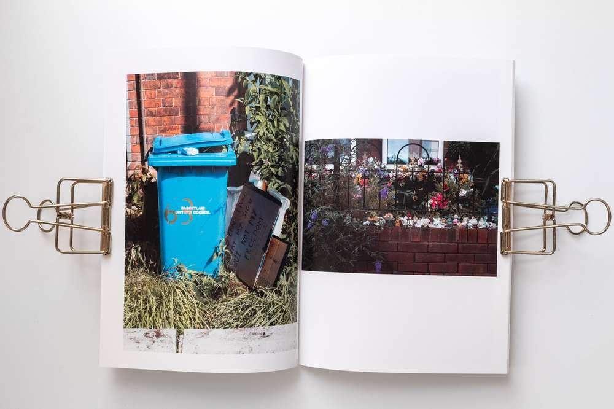

Zine: I got my hands-on a zine produced by my friend @connorjirving.
Titled Flâneur, the French term for an observer of contemporary urban life, Connor returned to his hometown as a visitor. He engaged nostalgic urban scenery with a psychogeographic methodology capturing candid street photography and banal new topographic imagery.
Here are some of my favourite spreads.
The invasive buddleia, a plant that escaped Kew gardens in the 1890’s next to a permit sign.To the left are Himalayan balsam, another invasive unwanted plant, and travellers.Empty town buildings; a stop sign for the economic declineGardens are always interesting cultural spaces, they say a lot about their custodian.
The photographer and Flâneur: Susan Sontag defines the photographer as an armed flâneur seeking the subversive underlining rather than the authorities suggested identity. The armed flâneur is an archetype photographer dating to the medium's inception.
Friend and artist, Kim Watson, sent me her work 'The garden weed project'. A delicate handmade book of unfixed lumen contact prints depicting weeds found in the garden.
The work is a re-examination of unwanted nuisance plants (weeds) as an assortment of versatile species and a valuable resource that is beneficial for our connection to nature as well as a food source for wildlife.
The methodology follows the re-examination with a conceptual play of circumventing traditional botanical cyanotype printing for the less recognizable lumen process.
Part of Razorcake press's DIY "one punks guide to" series. This traditional alternative zine stands out as it discusses horticulture within a DIY context.